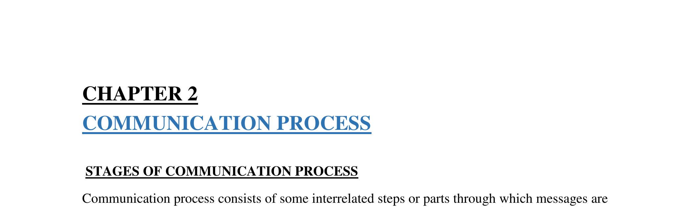

CHAPTER 2: COMMUNICATION PROCESS
STAGES OF COMMUNICATION PROCESS
Communication process consists of some interrelated steps or parts through which messages are sent form sender to receiver. The process of communication begins when the sender wants to transmit a fact, idea, opinion or other information to the receiver and ends with receiver's feedback to the sender. The main components of communication process are sender, message, channel, receiver and feedback
"Communication process is a chain made up of identifiable links. The chain includes sender, encoding, message, receiver, decoding, and feedback."
"The communication process is the method by which the sender transfers information and understanding to the receiver."
The following diagram represents the communication process
Thus, it is clear that communication process is the set of some sequential steps involved in transferring message as well as feedback. The process requires a sender who transmits message through a channel to the receiver. Then the receiver decodes the message and sends back some type of signal or feedback.
The message goes through five stages when it is sent by the sender to the receiver.These stages are as follows:
Sender
who conveys the message.
Message
which consists of facts, ideas, opinions.
Symbol
-this is also known as encoding of message.
Channel
-the communication channel can be a telephone.
Receiver
is the person who receives the message. He decodes the message and draws meaning from it.
Feedback
-the receiver sends his response to the sender of the message
Steps or elements of communication process
The communication process refers to the steps through which communication takes place between the sender and the receiver. This process starts with conceptualizing an idea or message by the sender and ends with the feedback from the receiver. In details, communication process consists of the following eight steps:
- Developing idea by the sender: In the first step, the communicator develops or conceptualizes an idea to be sent. It is also known as the planning stage since in this stage the communicator plans the subject matter of communication.
- Encoding: Encoding means converting or translating the idea into a perceivable form that can be communicated to others.
- Developing the message: After encoding the sender gets a message that can be transmitted to the receiver. The message can be oral, written, symbolic or nonverbal. For example, when people talk, speech is the message; when people write a letter, the words and sentences are the message; when people cries, the crying is the message.
- Selecting the medium: Medium is the channel or means of transmitting the message to the receiver. Once the sender has encoded his/her message, the next step is to select a suitable medium for transmitting it to the receiver. The medium of communication can be speaking, writing, signaling, gesturing etc.
- Transmission of message: In this step, the sender actually transmits the message through chosen medium. In the communication cycle, the tasks of the sender end with the transmission of the message.
- Receiving the message by receiver: This stage simply involves the reception of sender's message by the receiver. The message can be received in the form of hearing, seeing, feeling and so on.
- Decoding: Decoding is the receiver's interpretation of the sender's message. Here the receiver converts the message into thoughts and tries to analyze and understand it. Effective communication can occur only when both the sender and the receiver assign the same or similar meanings to the message.
- Feedback: The final step of communication process is feedback. Feedback means receiver's response to sender's message. It increases the effectiveness of communication. It ensures that the receiver has correctly understood the message. Feedback is the essence of two-way communication.
BARRIERS TO EFFECTIVE COMMUNICATION
There are many reasons why interpersonal communications may fail. In many communications, the message (what is said) may not be received exactly the way the sender intended. It is, therefore, important that the communicator seeks feedback to check that their message is clearly understood.
The skills of Active Listening, Clarification and Reflection may help but the skilled communicator also needs to be aware of the barriers to effective communication and how to avoid or overcome them.
Common Barriers to Effective Communication:
- Physical Barriers: this has to do with poor or outdated equipment used during communications, background noise, poor lighting, temperatures that are too hot or too cold.
- Attitudes: emotions like anger or sadness can taint objectivity. Also being extremely nervous, having a personal agenda or "needing to be right no matter what" can make communications less than effective. This is also known as "Emotional Noise".
- Language: this can seem like an easy one, but even people speaking the same language can have difficulty understanding each other if they are from different generations or from different regions of the same country. Slang, professional jargon and regional colloquialisms can even hurt communicators with the best intentions.
- Physiological Barriers: ill health, poor eyesight or hearing difficulties, pain.
- Problems with Structure Design: companies or institutions can have organization structures that are not clear, which can make communications difficult. Also to blame for faulty communications are bad information systems, and lack of supervision or training of the people involved.
- Cultural Noise: people sometimes make stereotypical assumptions about others based on their cultural background.
- Lack of Common Experience: it's a great idea to use examples or stories to explain a point that is being discussed. However, if the speaker and the audience cannot relate to these examples because they do not have the same knowledge or have not shared the same experiences then this tool will be ineffective.
- Ambiguity and Abstractions Overuse: leaving things half-said, using too many generalizations, proverbs or sayings, can all lead to communications that are not clear and that can lend themselves to misinterpretations.
- Information Overload: it takes time to process a lot of information and too many details can overwhelm and distract the audience from the important topics. Keep it Simple, Sweetie.
- Assumptions and Jumping to Conclusions: This can make someone reach a decision about something before listening to all the facts.
ways of overcoming barriers to effective communication
Communication barriers exist all around us. Misinterpretations abound in our discussions with team members. We delete, distort and generalise information in every conversation. And yet we think we clearly understand what others are saying and why they are saying it.
These barriers exist because we put them there. There are many ways we interpret information given to us by others, and these cause us to have a mis-alignment of understanding.
In order to remove hindrances in the way of communication the following steps are worth consideration:
- Clarify Ideas before Communication: The person sending the communication should be very clear in his mind about what he wants to say. He should know the objective of his message and, therefore, he should arrange his thoughts in a proper order.
- Communicate According to the Need of the Receiver: The sender of the communication should prepare the structure of the message not according to his own level or ability but he should keep in mind the level, understanding or the environment of the receiver.
- Consult Others before Communication: At the time of planning the communication, suggestions should be invited from all the persons concerned. Its main advantage will be that all those people who are consulted at the time of preparing the communication plan will contribute to the success of the communication system.
- Be Aware of Language, Tone and Content of Message: The sender should take care of the fact that the message should be framed in clear and beautiful language. The tone of the message should not injure the feelings of the receiver. As far as possible the contents of the message should be brief and excessive use of technical words should be avoided.
- Convey Things of Help and Value to the Listener: The subject matter of the message should be helpful to the receiver. The need and interest of the receiver should specially be kept in mind. Communication is more effective in such a situation.
- Ensure Proper Feedback: The purpose of feedback is to find out whether the receiver has properly understood the meaning of the information received. In the face-to- face communication, the reaction on the face of the receiver can be understood. But in case of written communication or some other sort of communications some proper method of feedback should be adopted by the sender
- Consistency of Message: The information sent to the receiver should not be self- contradictory. It should be in accordance with the objectives, policies, programmes and techniques of the organisation. When a new message has to be sent in place of the old one, it should always make a mention of the change otherwise it can create some doubts.
- Follow up Communication: In order to make communication effective the management should regularly try to know the weaknesses of the communication system. In this context effort can be made to know whether to lay more stress upon the formal or the informal communication would be appropriate. Similarly, suggestions can be invited in respect of the medium of communication (oral, written and gestural) to know as to which medium would be more effective and appropriate.
- Be a Good Listener: It is the essence of communication that both the sender and the receiver should be good listeners. Both should listen to the each other's point of view with attention, patience and positive attitude. A sender can receive much relevant information by being a good listener.
- Understand others see things differently to you. Try to predict the feelings and attitude of the receiver. What will their expectation be? What about their state of mind when you are communicating? What prejudices might they have? If you know these things before communicating, you reduce the risk if misinterpretation.
- As often as possible, speak face-to-face. This will allow for questions and, most importantly, allow you to see the body language, which will convey much more meaning than over the phone or through email.
- Make it easy for others to listen to you. Make your communication style that one of a conversationalist, one who is able to make a point quickly, succinctly and with conviction. If your key message is lost in the morass of a thousand words, people will wonder what you mean and what the purpose is. Clarity and brevity are the watchwords.
BASIC CONCEPTS OF TRANSMISSION AND RECEIPT OF A MESSAGE
Encoding of the message by sender
The Source/ The Sender
The process of communication begins with the 'source' also known as the 'Sender'. The source refers to the individual or group who intend to communicate an idea to their audience.
In regards to promotion/marketing communications, the source of the communication will be the organization that intends to promote their new product.
Encoding
When the source of the communication puts together their intended message, this is referred to as 'Encoding'. 'Encoding' can be defined as transforming an abstract idea into a communicable message. This is done using words, symbols, pictures, symbols and sounds.
In regards to promotion/marketing communication encoding involves transforming the organizations ideas about a product into various forms/types of promotion: advertisements, press releases, sales promotions or a personal sales pitch.
Transmission of message through a channel
Message Channel
The encoded message must now be delivered to its audience via a message channel. A message channel is a term that refers to the medium that carries the message from the sender to the receiver.
In marketing/promotions the message channel may be: television, radio, newspaper, or a sales person.
Decoding a message by receiver
The Receiver
Anyone who is audience to the message is referred to as the receiver. For example, all viewers of a television advertisement can be referred to as the 'receivers' of the message.
Decoding
When the receiver views or hears the message they do what is termed 'decoding'. Decoding can be defined at the receiver interpreting the message and coming to an understanding about what the source is communicating.
In promotions, an example of this would be a consumer viewing an advertisement and coming to an understanding about what the product is.
Decoding of feed-back by the sender
Feedback/Response
Feedback refers to any response the receiver offers to the message, this could be communication or behavior.
In marketing/promotions feedback refers to the way the consumer responds to the promotional campaign. For example, purchasing a product after viewing an advertisement is an example of feedback to a promotional campaign.
Measuring feedback is extremely important in a marketing/promotions campaign because it allows for a measure of the success of the marketing campaign. For example, negative feedback such as no increase in sales would show that changes need to be made in the promotional strategy.
Noise
Noise is the term given to anything that disrupts the communication. That is, anything that prevents the audience from receiving the message the way they source intended to. It doesn't necessarily involve and audible distraction.
In the case of promotion (marketing communications) noise could be - applications that allow audiences to skip advertisements - poorly place billboards - advertisements in print that are too small or poorly placed.
Feedback mechanism
Receivers are not just passive absorbers of messages; they receive the message and respond to them. This response of a receiver to sender's message is called Feedback. Sometimes a feedback could be a non-verbal smiles, sighs etc. Sometimes it is oral, as when you react to a colleague's ideas with questions or comments. Feedback can also be written like - replying to an e-mail, etc.
Feedback is your audience's response; it enables you to evaluate the effectiveness of your message. If your audience doesn't understand what you mean, you can tell by the response and then refine the message accordingly.
Giving your audience a chance to provide feedback is crucial for maintaining an open communication climate. The manager must create an environment that encourages feedback. For example after explaining the job to the subordinated he must ask them whether they have understood it or not. He should ask questions like "Do you understand?", "Do you have any doubts?" etc. At the same time he must allow his subordinated to express their views also.
Feedback is essential in communication so as to know whether the recipient has understood the message in the same terms as intended by the sender and whether he agrees to that message or not.
There are lot of ways in which company takes feedback from their employees, such as : Employee surveys, memos, emails, open-door policies, company news letter etc. Employees are not always willing to provide feedback. The organization has to work a lot to get the accurate feedback. The managers encourage feedback by asking specific questions, allowing their employees to express general views, etc. The organization should be receptive to their employee's feedback.
A manger should ensure that a feedback should:
- Focus on a particular behaviour - It should be specific rather than being general.
- Impersonal - Feedback should be job related, the manager should not criticize anyone personally.
- Goal oriented - If we have something negative to say about the person, we should always direct it to the recipients goal.
- Well timed - Feedback is most effective when there is a short gap between the recipients behaviour and the receipt of that feedback.
- Use "I" statements - Manager should make use of statements with the words like "I", "However" etc. For example instead of saying" You were absent from work yesterday", manager should say"I was annoyes when you missed your work yesterday".
- Ensure understanding - For feedback to be effective, the manager should make sure that the recipients understands the feedback properly.
- While giving negative feedback to the recipient, the manager should not mention the factors which are not in control of the recipient.